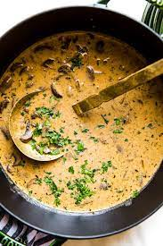

Potato Soup

Potato soup
Ingredients
- Carrots
- Celery
- Onion
- Potatoes
- Bacon
- Chicken Stock
Steps
- Chop veggies
- Chop bacon into 1/2 inch pieces
- Sauté bacon
- Remove bacon leaving bacon grease in pan
- Add veggies to pad, sauté until tender
- Add 1 cup chicken stock and 1 cup water to pan
- Add potatoes
- Bring to boil and reduce to simmer, let cook 45 minutes
- Use emersion blender and blend until soup is smooth